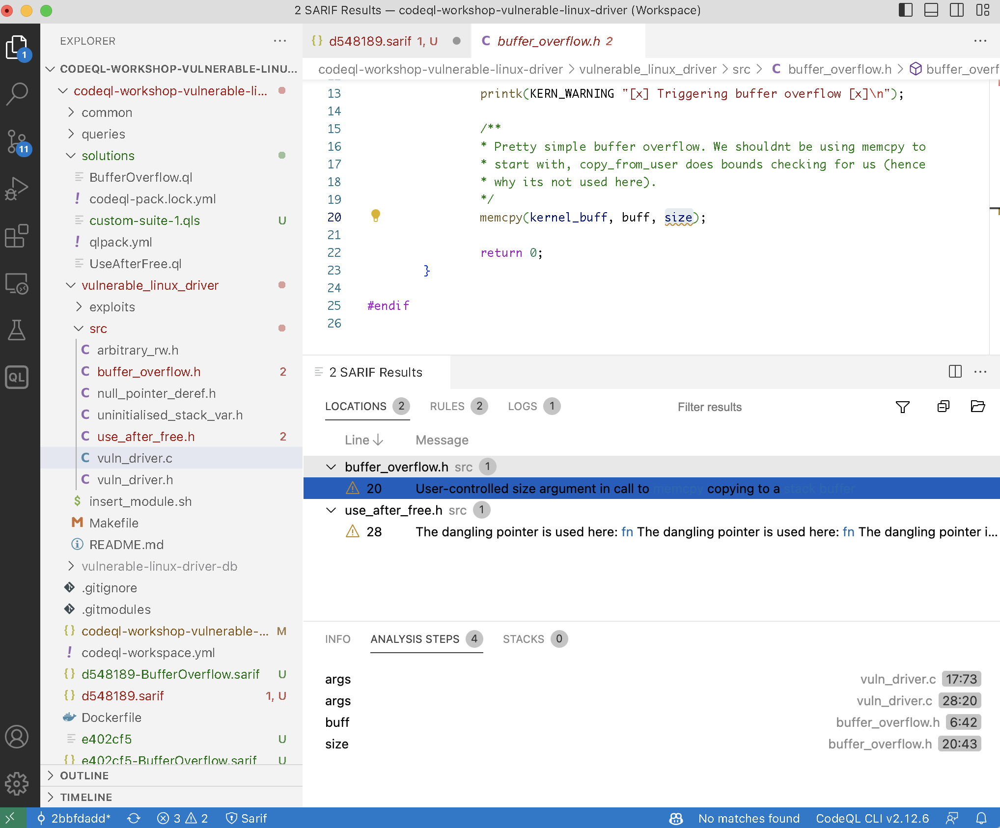

Table of Contents
- 1. End-to-end demo of CodeQL command line usage
- 1.1. Run analyses
- 1.2. Review results
- 1.3. Running sequence
- 1.4. Comparing analysis results across sarif files
- 1.5. Miscellany
1. End-to-end demo of CodeQL command line usage
1.1. Run analyses
1.1.1. Get collection of databases (already handy)
1.1.1.1. Get https://github.com/hohn/codeql-workshop-vulnerable-linux-driver
cd ~/local git clone git@github.com:hohn/codeql-workshop-vulnerable-linux-driver.git cd codeql-workshop-vulnerable-linux-driver/ unzip vulnerable-linux-driver.zip tree -L 2 vulnerable-linux-driver-db/ vulnerable-linux-driver-db/ ├── codeql-database.yml ├── db-cpp │ ├── default │ ├── semmlecode.cpp.dbscheme │ └── semmlecode.cpp.dbscheme.stats └── src.zip 3 directories, 4 files
1.1.1.2. Quick check using VS Code
The same steps will repeat for the cli.
- select DB
- select query
- run query
- view results
1.1.1.3. Install codeql
- Full docs
- https://docs.github.com/en/code-security/codeql-cli/using-the-codeql-cli/getting-started-with-the-codeql-cli#getting-started-with-the-codeql-cli
- https://docs.github.com/en/code-security/code-scanning/using-codeql-code-scanning-with-your-existing-ci-system/installing-codeql-cli-in-your-ci-system#setting-up-the-codeql-cli-in-your-ci-system
- In short:
cd ~/local/codeql-cli-end-to-end # Decide on version / os via browser, then: wget https://github.com/github/codeql-action/releases/download/codeql-bundle-v2.13.4/codeql-bundle-osx64.tar.gz # Fix attributes on mac if [ `uname` = Darwin ] ; then xattr -c *.tar.gz fi # Extract tar zxf ./codeql-bundle-osx64.tar.gz # Check binary pwd # /Users/hohn/local/codeql-cli-end-to-end ./codeql/codeql --version # CodeQL command-line toolchain release 2.13.4. # Copyright (C) 2019-2023 GitHub, Inc. # Unpacked in: /Users/hohn/local/codeql-cli-end-to-end/codeql # Analysis results depend critically on separately distributed query and # extractor modules. To list modules that are visible to the toolchain, # use 'codeql resolve qlpacks' and 'codeql resolve languages'. # Check packs 0:$ ./codeql/codeql resolve qlpacks |head -5 # codeql/cpp-all (/Users/hohn/local/codeql-cli-end-to-end/codeql/qlpacks/codeql/cpp-all/0.7.3) # codeql/cpp-examples (/Users/hohn/local/codeql-cli-end-to-end/codeql/qlpacks/codeql/cpp-examples/0.0.0) # codeql/cpp-queries (/Users/hohn/local/codeql-cli-end-to-end/codeql/qlpacks/codeql/cpp-queries/0.6.3) # codeql/csharp-all (/Users/hohn/local/codeql-cli-end-to-end/codeql/qlpacks/codeql/csharp-all/0.6.3) # codeql/csharp-examples (/Users/hohn/local/codeql-cli-end-to-end/codeql/qlpacks/codeql/csharp-examples/0.0.0) # Fix the path export PATH=$(pwd -P)/codeql:"$PATH" # Check languages codeql resolve languages | head -5 # go (/Users/hohn/local/codeql-cli-end-to-end/codeql/go) # python (/Users/hohn/local/codeql-cli-end-to-end/codeql/python) # java (/Users/hohn/local/codeql-cli-end-to-end/codeql/java) # html (/Users/hohn/local/codeql-cli-end-to-end/codeql/html) # xml (/Users/hohn/local/codeql-cli-end-to-end/codeql/xml)
- A more fancy version
# Reference urls: # https://github.com/github/codeql-cli-binaries/releases/download/v2.8.0/codeql-linux64.zip # https://github.com/github/codeql/archive/refs/tags/codeql-cli/v2.8.0.zip # # grab -- retrieve and extract codeql cli and library # Usage: grab version url prefix grab() { version=$1; shift platform=$1; shift prefix=$1; shift mkdir -p $prefix/codeql-$version && cd $prefix/codeql-$version || return # Get cli wget "https://github.com/github/codeql-cli-binaries/releases/download/$version/codeql-$platform.zip" # Get lib wget "https://github.com/github/codeql/archive/refs/tags/codeql-cli/$version.zip" # Fix attributes if [ `uname` = Darwin ] ; then xattr -c *.zip fi # Extract unzip -q codeql-$platform.zip unzip -q $version.zip # Rename library directory for VS Code mv codeql-codeql-cli-$version/ ql # remove archives? # rm codeql-$platform.zip # rm $version.zip } grab v2.7.6 osx64 $HOME/local grab v2.8.3 osx64 $HOME/local grab v2.8.4 osx64 $HOME/local grab v2.6.3 linux64 /opt grab v2.6.3 osx64 $HOME/local grab v2.4.6 osx64 $HOME/local
- Most flexible in use, but more initial setup
gh, the GitHub command-line tool from https://github.com/cli/cli- gh api repos/{owner}/{repo}/releases https://cli.github.com/manual/gh_api
- gh extension create https://cli.github.com/manual/gh_extension
- gh codeql extension https://github.com/github/gh-codeql
gh gist list https://cli.github.com/manual/gh_gist_list
0:$ gh codeql GitHub command-line wrapper for the CodeQL CLI.
1.1.1.4. Install pack dependencies
- Full docs
- View installed docs via
-hflag, highly recommended
# Overview codeql -h # Sub 1 codeql pack -h # Sub 2 codeql pack install -h
- In short
- Create the qlpack
Create the qlpack files if not there, one per directory. In this project, that's already done:
0:$ find codeql-workshop-vulnerable-linux-driver -name "qlpack.yml" codeql-workshop-vulnerable-linux-driver/queries/qlpack.yml codeql-workshop-vulnerable-linux-driver/solutions/qlpack.yml codeql-workshop-vulnerable-linux-driver/common/qlpack.ymlFor example:
cat codeql-workshop-vulnerable-linux-driver/queries/qlpack.yml
shows
--- library: false name: queries version: 0.0.1 dependencies: codeql/cpp-all: ^0.7.0 common: "*"
So the queries directory does not contain a library, but it depends on one,
cat codeql-workshop-vulnerable-linux-driver/common/qlpack.yml
--- library: true name: common version: 0.0.1 dependencies: codeql/cpp-all: 0.7.0
- Install each pack's dependencies
The first time you install dependencies, it's a good idea to do this menually, per
qlpack.ymlfile, and deal with any errors that may occur.pushd ~/local/codeql-cli-end-to-end/codeql-workshop-vulnerable-linux-driver codeql pack install --no-strict-mode queries/After the initial setup and for automation, install each pack's dependencies via a loop using
codeql pack installpushd ~/local/codeql-cli-end-to-end/codeql-workshop-vulnerable-linux-driver find . -name "qlpack.yml" # ./queries/qlpack.yml # ./solutions/qlpack.yml # ./common/qlpack.yml codeql pack install --no-strict-mode queries/ # Dependencies resolved. Installing packages... # Install location: /Users/hohn/.codeql/packages # Nothing to install. # Package install location: /Users/hohn/.codeql/packages # Nothing downloaded. for sub in `find . -name "qlpack.yml" | sed s@qlpack.yml@@g;` do codeql pack install --no-strict-mode $sub done
- Create the qlpack
1.1.2. Run queries
1.1.2.1. Individual: 1 database -> N sarif files
#* Set environment PROJ=$HOME/local/codeql-cli-end-to-end/codeql-workshop-vulnerable-linux-driver DB=$PROJ/vulnerable-linux-driver-db QLQUERY=$PROJ/solutions/BufferOverflow.ql QUERY_RES_SARIF=$PROJ/$(cd $PROJ && git rev-parse --short HEAD)-BufferOverflow.sarif #* Run query pushd $PROJ codeql database analyze --format=sarif-latest --rerun \ --output $QUERY_RES_SARIF \ -j6 \ --ram=24000 \ -- \ $DB \ $QLQUERY # if you get # fatal error occurred: Error initializing the IMB disk cache: the cache # directory is already locked by another running process. Only one instance of # the IMB can access a cache directory at a time. The lock file is located at # /Users/hohn/local/codeql-cli-end-to-end/codeql-workshop-vulnerable-linux-driver/vulnerable-linux-driver-db/db-cpp/default/cache/.lock # exit vs code and try again
And after some time:
BufferOverflow.ql: [1/1 eval 1.8s] Results written to solutions/BufferOverfl Shutting down query evaluator. Interpreting results.
echo The query $QLQUERY echo run on $DB echo produced output in $QUERY_RES_SARIF: head -5 $QUERY_RES_SARIF # { # "$schema" : "https://json.schemastore.org/sarif-2.1.0.json", # "version" : "2.1.0", # "runs" : [ { # "tool" : { # ...
And run another, get another sarif file. Bad idea in general, but good for debugging timing etc.
#* Use prior variable settings #* Run query pushd $PROJ qo=$PROJ/$(cd $PROJ && git rev-parse --short HEAD)-UseAfterFree.sarif codeql database analyze --format=sarif-latest --rerun \ --output $qo \ -j6 \ --ram=24000 \ -- \ $DB \ $PROJ/solutions/UseAfterFree.ql popd echo "Query results in $qo" head -5 "$qo" # Query results in /Users/hohn/local/codeql-cli-end-to-end/codeql-workshop-vulnerable-linux-driver/e402cf5-UseAfterFree.sarif # { # "$schema" : "https://json.schemastore.org/sarif-2.1.0.json", # "version" : "2.1.0", # "runs" : [ { # "tool" : {
1.1.2.2. Use directory of queries: 1 database -> 1 sarif file (least effort)
#* Set environment P1_PROJ=$HOME/local/codeql-cli-end-to-end/codeql-workshop-vulnerable-linux-driver P1_DB=$PROJ/vulnerable-linux-driver-db P1_QLQUERYDIR=$PROJ/solutions/ P1_QUERY_RES_SARIF=$PROJ/$(cd $PROJ && git rev-parse --short HEAD).sarif #* check variables set | grep P1_ #* Run query pushd $P1_PROJ codeql database analyze --format=sarif-latest --rerun \ --output $P1_QUERY_RES_SARIF \ -j6 \ --ram=24000 \ -- \ $P1_DB \ $P1_PROJ/solutions/ popd
We can compare SARIF result sizes:
ls -la "$qo" $P1_QUERY_RES_SARIF $QUERY_RES_SARIF
And for these tiny results, it's mostly metadata:
-rw-r--r-- 1 hohn staff 29K Jun 20 10:06 /Users/hohn/local/codeql-cli-end-to-end/codeql-workshop-vulnerable-linux-driver/d548189-BufferOverflow.sarif -rw-r--r-- 1 hohn staff 33K Jun 20 10:02 /Users/hohn/local/codeql-cli-end-to-end/codeql-workshop-vulnerable-linux-driver/d548189.sarif -rw-r--r-- 1 hohn staff 28K Jun 20 09:51 /Users/hohn/local/codeql-cli-end-to-end/codeql-workshop-vulnerable-linux-driver/e402cf5-UseAfterFree.sarif
1.1.2.3. Use suite: 1 database -> 1 sarif file (more flexible, more effort)
A useful, general purpose template is at https://github.com/rvermeulen/codeql-example-project-layout.
- Documentation
- built-in-codeql-query-suites
creating-codeql-query-suites Important:
You must add at least one query, queries, or qlpack instruction to your suite definition, otherwise no queries will be selected. If the suite contains no further instructions, all the queries found from the list of files, in the given directory, or in the named CodeQL pack are selected. If there are further filtering instructions, only queries that match the constraints imposed by those instructions will be selected.
Also, a suite definition must be in a codeql pack.
- In short
codeql resolve qlpacks | grep cpp # Copy query suite into the pack cd ~/local/codeql-cli-end-to-end cp custom-suite-1.qls codeql-workshop-vulnerable-linux-driver/solutions/ codeql resolve queries \ codeql-workshop-vulnerable-linux-driver/solutions/custom-suite-1.qls
# # Taken from # codeql-v2.12.3/codeql/qlpacks/codeql/suite-helpers/0.4.3/code-scanning-selectors.yml # and modified # - description: Security sample queries - queries: . # - qlpack: some-pack-cpp - include: kind: # UseAfterFree - problem # # BufferOverflow # - path-problem # precision: # - high # - very-high # problem.severity: # - error # tags contain: # - security # - exclude: # deprecated: // # - exclude: # query path: # - /^experimental\/.*/ # - Metrics/Summaries/FrameworkCoverage.ql # - /Diagnostics/Internal/.*/ # - exclude: # tags contain: # - modelgenerator
1.1.3. The importance of versioning
1.1.3.1. CodeQL cli version
Easy:
export PATH=$HOME/local/codeql-cli-end-to-end/codeql:"$PATH" codeql --version
CodeQL command-line toolchain release 2.13.4. Copyright (C) 2019-2023 GitHub, Inc. Unpacked in: /Users/hohn/local/codeql-cli-end-to-end/codeql Analysis results depend critically on separately distributed query and extractor modules. To list modules that are visible to the toolchain, use 'codeql resolve qlpacks' and 'codeql resolve languages'.
1.1.3.2. Database version
An attempt to run an analysis with an older version of the cli against a database created with a newer cli version will likely abort with an error.
In terms of commands, the codeql versions used for
codeql database create ...
and
codeql database analyze ..
should be the same.
If you just have a collection of databases, you can check what version of the cli produced it. The database directory contains the codeql version used in a yaml file, a human-readable check:
cd ~/local/codeql-cli-end-to-end/codeql-workshop-vulnerable-linux-driver
grep -A 2 creationMetadata vulnerable-linux-driver-db/codeql-database.yml
creationMetadata: cliVersion: 2.13.0 creationTime: 2023-04-24T21:39:15.963711665Z
1.1.3.3. Query set version
For suites in our own source code
Your query sets may have release versions or tags. But they almost certainly have git commit ids that can be used, like the following:
cd ~/local/codeql-cli-end-to-end/codeql-workshop-vulnerable-linux-driver git rev-parse --short HEADd548189
If you use packs, you can fix the ids of dependencies in the
qlpack.ymlfile. In our example, this is done in several places. Thecommonversion:cd ~/local/codeql-cli-end-to-end/codeql-workshop-vulnerable-linux-driver cat common/qlpack.yml--- library: true name: common version: 0.0.1 dependencies: codeql/cpp-all: 0.7.0
The dependencies are transitive; both
queriesandsolutionsdepend oncommon, so packs fixed by common also fix packs used by the others. Andcommonis fixed by ourgitid, so we're done.Some optional details
We have specified these packs:
cd ~/local/codeql-cli-end-to-end/codeql-workshop-vulnerable-linux-driver grep codeql/cpp-all */qlpack.ymlcommon/qlpack.yml: codeql/cpp-all: 0.7.0 queries/qlpack.yml: codeql/cpp-all: ^0.7.0
The caret notation
^means "at least". So at least version 0.7.0.After we install packs via
codeql pack install --no-strict-mode ...
some lock files are generated, and those fix versions further down the dependency chain:
cd ~/local/codeql-cli-end-to-end/codeql-workshop-vulnerable-linux-driver cat common/codeql-pack.lock.yml--- lockVersion: 1.0.0 dependencies: codeql/cpp-all: version: 0.7.0 codeql/ssa: version: 0.0.15 codeql/tutorial: version: 0.0.8 codeql/util: version: 0.0.8 compiled: falseNote that a query suite is always in a codeql pack, so the pack id is also the suite id.
For example, above we copied a suite and resolved it:
cd ~/local/codeql-cli-end-to-end cp custom-suite-1.qls codeql-workshop-vulnerable-linux-driver/solutions/ codeql resolve queries \ codeql-workshop-vulnerable-linux-driver/solutions/custom-suite-1.qls
/Users/hohn/local/codeql-cli-end-to-end/codeql-workshop-vulnerable-linux-driver/solutions/UseAfterFree.ql
To assign a version number, we can use the revision id:
cd ~/local/codeql-cli-end-to-end git rev-parse --short head7bade5b
For manually selected library suites
For a library suite, we can use the pack id. For example, we can list the packs
export PATH=$HOME/local/codeql-cli-end-to-end/codeql:"$PATH" codeql resolve qlpacks | grep cpp
codeql/cpp-all (/Users/hohn/local/codeql-cli-end-to-end/codeql/qlpacks/codeql/cpp-all/0.7.3) codeql/cpp-examples (/Users/hohn/local/codeql-cli-end-to-end/codeql/qlpacks/codeql/cpp-examples/0.0.0) codeql/cpp-queries (/Users/hohn/local/codeql-cli-end-to-end/codeql/qlpacks/codeql/cpp-queries/0.6.3)
Following the last one, we can find some query suites manually. The pack is already known; 0.6.3.
find ~/local/codeql-cli-end-to-end/codeql/qlpacks/codeql/cpp-queries/0.6.3 \ -name "*.qls"
/Users/hohn/local/codeql-cli-end-to-end/codeql/qlpacks/codeql/cpp-queries/0.6.3/codeql-suites/cpp-security-extended.qls /Users/hohn/local/codeql-cli-end-to-end/codeql/qlpacks/codeql/cpp-queries/0.6.3/codeql-suites/cpp-security-and-quality.qls /Users/hohn/local/codeql-cli-end-to-end/codeql/qlpacks/codeql/cpp-queries/0.6.3/codeql-suites/cpp-security-experimental.qls /Users/hohn/local/codeql-cli-end-to-end/codeql/qlpacks/codeql/cpp-queries/0.6.3/codeql-suites/cpp-code-scanning.qls /Users/hohn/local/codeql-cli-end-to-end/codeql/qlpacks/codeql/cpp-queries/0.6.3/codeql-suites/cpp-lgtm-full.qls /Users/hohn/local/codeql-cli-end-to-end/codeql/qlpacks/codeql/cpp-queries/0.6.3/codeql-suites/cpp-lgtm.qls
For predefined suites from
codeql resolve queriesA full list of suites is produced via
codeql resolve queries, here is a filtered version.export PATH=$HOME/local/codeql-cli-end-to-end/codeql:"$PATH" codeql resolve queries 2>&1 | grep cpp
cpp-code-scanning.qls - Standard Code Scanning queries for C and C++ cpp-lgtm-full.qls - Standard LGTM queries for C/C++, including ones not displayed by default cpp-lgtm.qls - Standard LGTM queries for C/C++ cpp-security-and-quality.qls - Security-and-quality queries for C and C++ cpp-security-experimental.qls - Extended and experimental security queries for C and C++ cpp-security-extended.qls - Security-extended queries for C and C++
The following just counts the list but notice the header output has version info reported on
stderr:export PATH=$HOME/local/codeql-cli-end-to-end/codeql:"$PATH" ( codeql resolve queries cpp-code-scanning.qls | wc ) 2>&1
Recording pack reference codeql/cpp-queries at /Users/hohn/local/codeql-cli-end-to-end/codeql/qlpacks/codeql/cpp-queries/0.6.3. Recording pack reference codeql/suite-helpers at /Users/hohn/local/codeql-cli-end-to-end/codeql/qlpacks/codeql/cpp-queries/0.6.3/.codeql/libraries/codeql/suite-helpers/0.5.3. 47 65 5813So we can use the codeql/cpp-queries version, 0.6.3, if we run the
cpp-code-scanning.qlsquery suite.
The difference in the last two approaches is the way the suite is chosen. The version number will be the same.
1.2. Review results
1.2.1. SARIF Documentation
The standard is defined at https://docs.oasis-open.org/sarif/sarif/v2.1.0/os/sarif-v2.1.0-os.html
1.2.2. SARIF viewer plugin
1.2.2.1. Install plugin in VS Code
https://marketplace.visualstudio.com/items?itemName=MS-SarifVSCode.sarif-viewer
Sarif Viewer v3.3.7 Microsoft DevLabs microsoft.com 53,335 (1)
1.2.2.2. Review
cd ~/local/codeql-cli-end-to-end find . -maxdepth 2 -name "*.sarif"
Pick one in VS Code. Either
cd ~/local/codeql-cli-end-to-end/codeql-workshop-vulnerable-linux-driver cd codeql-workshop-vulnerable-linux-driver/ code d548189.sarif
or manually.
We need the source.
cd ~/local/codeql-cli-end-to-end/codeql-workshop-vulnerable-linux-driver
git submodule init
git submodule update
When we review, VS Code will ask for the path.
cd /Users/hohn/local/codeql-cli-end-to-end/codeql-workshop-vulnerable-linux-driver/vulnerable_linux_driver
ls src/vuln_driver.c
Reviewing looks as follows.

1.2.3. View raw sarif with jq
List the SARIF files again
cd ~/local/codeql-cli-end-to-end find . -maxdepth 2 -name "*.sarif"
./codeql-workshop-vulnerable-linux-driver/e402cf5.sarif ./codeql-workshop-vulnerable-linux-driver/d548189.sarif ./codeql-workshop-vulnerable-linux-driver/d548189-BufferOverflow.sarif ./codeql-workshop-vulnerable-linux-driver/e402cf5-UseAfterFree.sarif ./codeql-workshop-vulnerable-linux-driver/e402cf5-BufferOverflow.sarif
The CodeQL version
cd ~/local/codeql-cli-end-to-end jq '.runs | .[0] | .tool.driver.semanticVersion ' < ./codeql-workshop-vulnerable-linux-driver/e402cf5.sarif
"2.13.4"
The names of rules processed
cd ~/local/codeql-cli-end-to-end jq '.runs | .[] | .tool.driver.rules | .[] | .name ' < ./codeql-workshop-vulnerable-linux-driver/d548189.sarif
"cpp/buffer_overflow" "cpp/use_after_free"
1.2.4. View raw sarif with jq and fzf
Install the fuzzy finder
brew install fzf
or apt-get=/=yum on linux
Try working to .runs[0].tool.driver.rules and follow the output in real
time.
pushd ~/local/codeql-cli-end-to-end/codeql-workshop-vulnerable-linux-driver res=e402cf5-UseAfterFree.sarif echo '' | fzf --print-query --preview="jq {q} < $res" popd
1.2.5. sarif-cli
1.2.5.1. Setup / local install
Clone https://github.com/hohn/sarif-cli or https://github.com/knewbury01/sarif-cli
cd ~/local/codeql-cli-end-to-end git clone git@github.com:hohn/sarif-cli.git cd ~/local/codeql-cli-end-to-end/sarif-cli python3.9 -m venv .venv . .venv/bin/activate python -m pip install -r requirementsDEV.txt # Put bin/ contents into venv PATH pip install -e .
1.2.5.2. Compiler-style textual output from SARIF
The sarif-cli has several script to use from the shell level:
cd ~/local/codeql-cli-end-to-end/sarif-cli
ls -1 bin/
json-to-yaml sarif-aggregate-scans sarif-create-aggregate-report sarif-digest sarif-extract-multi sarif-extract-scans sarif-extract-scans-runner sarif-extract-tables sarif-labeled sarif-list-files sarif-pad-aggregate sarif-results-summary sarif-to-dot
The simplest one just list the source files found during analysis:
. ~/local/codeql-cli-end-to-end/sarif-cli/.venv/bin/activate cd ~/local/codeql-cli-end-to-end/codeql-workshop-vulnerable-linux-driver sarif-list-files d548189.sarif
src/buffer_overflow.h src/use_after_free.h src/vuln_driver.c
Much more useful is a compiler-style summary of all results found:
. ~/local/codeql-cli-end-to-end/sarif-cli/.venv/bin/activate cd ~/local/codeql-cli-end-to-end/codeql-workshop-vulnerable-linux-driver sarif-results-summary d548189.sarif
RESULT: src/buffer_overflow.h:20:43:20:47: User-controlled size argument in call to [memcpy](1) copying to a [stack buffer](2) PATH 0 FLOW STEP 0: src/vuln_driver.c:17:73:17:77: args FLOW STEP 1: src/vuln_driver.c:28:20:28:33: args FLOW STEP 2: src/buffer_overflow.h:6:42:6:46: buff FLOW STEP 3: src/buffer_overflow.h:20:43:20:47: size RESULT: src/use_after_free.h:28:11:28:25: The dangling pointer is used here: [fn](1) The dangling pointer is used here: [fn](2) The dangling pointer is used here: [arg](3) The dangling pointer is used here: [fn](4) The dangling pointer is used here: [arg](5)
This sarif file has only two results, so the output is short:
RESULT: src/buffer_overflow.h:20:43:20:47: User-controlled size argument in call to [memcpy](1) copying to a [stack buffer](2) PATH 0 FLOW STEP 0: src/vuln_driver.c:17:73:17:77: args FLOW STEP 1: src/vuln_driver.c:28:20:28:33: args FLOW STEP 2: src/buffer_overflow.h:6:42:6:46: buff FLOW STEP 3: src/buffer_overflow.h:20:43:20:47: size RESULT: src/use_after_free.h:28:11:28:25: The dangling pointer is used here: [fn](1) The dangling pointer is used here: [fn](2) The dangling pointer is used here: [arg](3) The dangling pointer is used here: [fn](4) The dangling pointer is used here: [arg](5)
This illustrates the differences in the output between the two result @kind
s:
@kind problemis a single list of results found@kind path-problemis a list of flow paths. Each path in turn is a list of locations.
Most of these scripts take options that significantly change their output; to
see them, use the -h or --help flags. E.g.,
. ~/local/codeql-cli-end-to-end/sarif-cli/.venv/bin/activate
sarif-results-summary -h
usage: sarif-results-summary [-h] [-s srcroot] [-r] [-e] [-c] sarif-file
summary of results
positional arguments:
sarif-file input file, - for stdin
optional arguments:
-h, --help show this help message and exit
-s srcroot, --list-source srcroot
list source snippets using srcroot as sarif SRCROOT
-r, --related-locations
list related locations like "hides [parameter](1)"
-e, --endpoints-only only list source and sink, dropping the path.
Identical, successive source/sink pairs are combined
-c, --csv output csv instead of human-readable summary
Some of these make output much more informative, like -r and -s:
With -r:
. ~/local/codeql-cli-end-to-end/sarif-cli/.venv/bin/activate cd ~/local/codeql-cli-end-to-end/codeql-workshop-vulnerable-linux-driver sarif-results-summary -r d548189.sarif
RESULT: src/buffer_overflow.h:20:43:20:47: User-controlled size argument in call to [memcpy](1) copying to a [stack buffer](2) REFERENCE: src/buffer_overflow.h:20:17:20:23: memcpy REFERENCE: src/buffer_overflow.h:8:22:8:33: stack buffer PATH 0 FLOW STEP 0: src/vuln_driver.c:17:73:17:77: args FLOW STEP 1: src/vuln_driver.c:28:20:28:33: args FLOW STEP 2: src/buffer_overflow.h:6:42:6:46: buff FLOW STEP 3: src/buffer_overflow.h:20:43:20:47: size RESULT: src/use_after_free.h:28:11:28:25: The dangling pointer is used here: [fn](1) The dangling pointer is used here: [fn](2) The dangling pointer is used here: [arg](3) The dangling pointer is used here: [fn](4) The dangling pointer is used here: [arg](5) REFERENCE: src/use_after_free.h:84:22:84:24: fn REFERENCE: src/use_after_free.h:87:70:87:72: fn REFERENCE: src/use_after_free.h:87:90:87:93: arg REFERENCE: src/use_after_free.h:89:20:89:22: fn REFERENCE: src/use_after_free.h:89:39:89:42: arg
If the source code is available, we can use -s to include snippets in the
output. This effectively converts sarif to the format used by gcc and clang
to report warnings and errors.
. ~/local/codeql-cli-end-to-end/sarif-cli/.venv/bin/activate cd ~/local/codeql-cli-end-to-end/codeql-workshop-vulnerable-linux-driver sarif-results-summary -s vulnerable_linux_driver/ d548189.sarif
RESULT: src/buffer_overflow.h:20:43:20:47: User-controlled size argument in call to [memcpy](1) copying to a [stack buffer](2)
memcpy(kernel_buff, buff, size);
^^^^
PATH 0
FLOW STEP 0: src/vuln_driver.c:17:73:17:77: args
static long do_ioctl(struct file *filp, unsigned int cmd, unsigned long args)
^^^^
FLOW STEP 1: src/vuln_driver.c:28:20:28:33: args
buffer_overflow((char *) args);
^^^^^^^^^^^^^
FLOW STEP 2: src/buffer_overflow.h:6:42:6:46: buff
static int buffer_overflow(char __user *buff)
^^^^
FLOW STEP 3: src/buffer_overflow.h:20:43:20:47: size
memcpy(kernel_buff, buff, size);
^^^^
RESULT: src/use_after_free.h:28:11:28:25: The dangling pointer is used here: [fn](1)
The dangling pointer is used here: [fn](2)
The dangling pointer is used here: [arg](3)
The dangling pointer is used here: [fn](4)
The dangling pointer is used here: [arg](5)
uaf_obj *global_uaf_obj = NULL;
^^^^^^^^^^^^^^
1.2.5.3. SQL conversion – not compatible with codeql v2.13.4
The ultimate purpose of the sarif-cli is producing CSV files for import into SQL databases. This requires a completely defined static structure, without any optional fields. The internals of the tool are beyond the scope of this workshop, some details are their external effects are important:
- a (very large and comprehensive) type signature is defined in sarif-cli
- sarif files that have extra fields not in the signature will produce warnings
- sarif files that are missing fields from the signature will produce a fatal error. A message will be printed and the scripts will abort.
- Sometimes, sarif files will have a field but no content. For a number of these, dummy values are inserted. One example are queries that don't produce line numbers in their output; for those, -1 is used as value.
Unfortunately, this version of codeql
cd ~/local/codeql-cli-end-to-end
./codeql/codeql --version
CodeQL command-line toolchain release 2.13.4. Copyright (C) 2019-2023 GitHub, Inc. Unpacked in: /Users/hohn/local/codeql-cli-end-to-end/codeql Analysis results depend critically on separately distributed query and extractor modules. To list modules that are visible to the toolchain, use 'codeql resolve qlpacks' and 'codeql resolve languages'.
has signature changes incompatible with (the older) sarif-cli (version e62c351)
1.3. Running sequence
1.3.1. Smallest query suite to largest
A short script to show us how many queries the standard suites have:
export PATH=$HOME/local/codeql-cli-end-to-end/codeql:"$PATH" queries=`codeql resolve queries 2>&1 | grep cpp | awk '{print($1)}'` ( for suite in $queries do len=`codeql resolve queries $suite | wc -l` echo "Suite $suite has $len queries" done ) 2>/dev/null
Suite cpp-code-scanning.qls has 47 queries Suite cpp-lgtm-full.qls has 169 queries Suite cpp-lgtm.qls has 100 queries Suite cpp-security-and-quality.qls has 167 queries Suite cpp-security-experimental.qls has 118 queries Suite cpp-security-extended.qls has 83 queries
If we want to gradually increase coverage using the standard suites, we would thus use them in this order:
- cpp-code-scanning.qls, 47 queries
- cpp-security-extended.qls, 83 queries
- cpp-lgtm.qls, 100 queries
- cpp-security-experimental.qls, 118 queries
- cpp-security-and-quality.qls, 167 queries
- cpp-lgtm-full.qls, 169 queries
1.3.2. Working with results based on counts
Lots of result (> 5000)
Use the sarif-cli, e.g.,
sarif-results-summary -r d548189.sarif, as above.Medium result sets (~ 2000 results)
Use the sarif-cli or try the SARIF viewer plugin.
Few results
Use the SARIF viewer plugin for detailed review and working with the results / queries. Use the sarif-cli for quick command-line comparison.
1.4. Comparing analysis results across sarif files
Use the sarif-cli.
Options:
- use
sarif-results-summaryon each sarif result file individually, then compare the resulting text files viadiff-style tools - (powerful, but effort required) if your version of CodeQL is compatible, use
sarif-extract-scans-runnerto put all results into an SQL database and use that to query the results.
1.5. Miscellany
- Scale factor for building DBs: Common case: 15 minutes for a parallel cpp compilation can be a 2 hour database build for codeql.